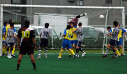
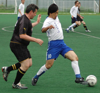
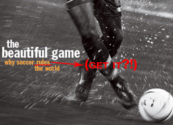

Geckoes & YCAC Share Points in Div 1 Opener.
|  |
|
Rob Keyworth is kept busy in the 1st fixture of TML6.
|
Hachioji Park, Saturday 23rd August,
They say to be champions of the TML you have to be able to win ugly, and this has been proved year-in-year-out by the aesthetically challenged players of the previous 5 TML championship winning teams (with the exception of Jon Day, who as everyone knows is dead gorgeous). If this is the case this season, the best the Geckoes and YCAC can expect is to end up towards upper mid-table, with both teams seeming more than happy to draw prettily. more ...
SB.
Meet the New Season. Same as the Old Season.
There was a sense of deja vu around the YCAC camp as TML 6 kicked off on saturday. Not so much the fact that we were back at Hachioji with the work shy Jorge* in charge again barely 2 months after we finished TML 5 in the same surroundings. more ...
ST.
|  |
|
Sean Lewis closes down Tomo Kobayashi as Panthers claw past JETS 2nds.
|
Panthers Leap to New Heights!
Hachioji Park, Saturday 23rd August.
Having been part of the team since it began (this time last year) I have seen many changes to the Tokyo Panthers team, the way we play and the score lines. The score lines have got better, the players faster (and it seems younger!!) and the team more fluid. This was definitely the case for our first game of the season.
A rejuvenated side and a fresh challenge against Jets 2nd saw us fully commit to going forward and believe it or not to score! more ...
LR.
Football Rules!!
FJ Head-quarters Shibuya, August 21st,
As TML Season 6 kicks off there's a great deal of speculation, rumour and hullabaloo going on about who's playing for who? Who's been tapped-up and what new recruits will be creating names for themselves this season? Word on the street is that 3-ex pro's will be featuring in at least 2 of the Divisions, one with international caps. Fact or Fiction? We'll have to wait and see. The first games of the season are scheduled to kick off on Saturday, 23rd August and all players, captains, officials and anyone with anything to do with the league are urged to go through the TML Rules for Season 6 with a fine-toothed comb - PARTICULARLY REGARDING PLAYER REGISTRATION & THE STRIKE SYSTEM. click here to read the rules. We are praying to powers on high that NO TEAM FALLS FOUL OF THESE RULES & HEAVEN FORBID ENDS UP FORFEITING ANY POINTS. Captains, Players, Anybody, Everybody, don't let this happen - we IMPLORE YOU TO LET FOOTBALL GOVERN RESULTS, this is what we want, this is all we want, this is all we've ever wanted, this is all we'll ever want. Now, it's in your hands. MAY THE FORCE (of understanding and following simple rules regarding player registration, team sheet submission and payment of dues) BE WITH (all of you) YOU.
FJ.
|